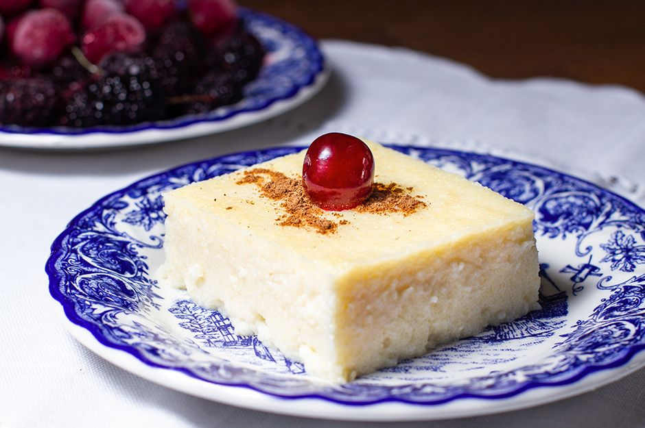

İRMİK TATLISI TARİFİ

MALZEMELER
- 1 paket bisküvi
- 1 Su bardağı şeker
- 9 yemek kaşığı irmik
- 1 litre süt
- 1 paket vanilya
- 1 yemek kaşığı margarin
HAZIRLANIŞI
- 1 litre süt, irmik ve şekeri tencereye alalım.
- Kısık ateşte boza kıvamına gelene kadar karıştırarak pişirelim.
- Piştikten sonra margarin ve vanilyayı ekleyerek yavaş yavaş karıştıralım.
- Daha sonra tatlının yarısını borcama dökelim.
- Üzerine bisküvi dizdikten sonra tatlının kalanını dökelim.
- Üzerini dilediğiniz gibi süsleyebilirsiniz.
- AFİYET OLSUN...